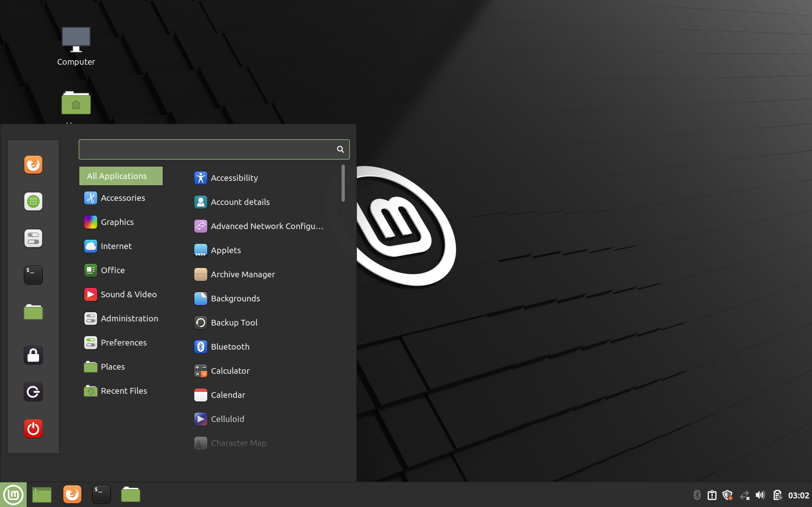

Linux Mint is a community-driven Linux distribution based on Ubuntu (which is in turn based on Debian), bundled with a variety of free and open-source applications. It can provide full out-of-the-box multimedia support for those who choose to include proprietary software such as multimedia codecs.

The Linux Mint project was created by Clément Lefèbvre and is actively maintained by the Linux Mint Team and community.
The Cinnamon desktop environment is a fork of GNOME Shell based on the innovations made in Mint Gnome Shell Extensions (MGSE). It was released as an add-on for Linux Mint 12 and has been available as a default desktop environment since Linux Mint 13.
Linux Mint can be booted and run from a USB flash drive on any PC capable of booting from a USB drive, with the option of saving settings to the flash drive. A USB creator program is available to install on Ubuntu (but not LMDE) Live Linux Mint on a USB drive. Alternatively, the Linux Mint ISO can be burned to a DVD to boot from.
Linux Mint has multiple editions based on Ubuntu, with various desktop environments available. It also has a Debian-based edition.
As of Linux Mint 13, there are two main editions developed by the core development team and using Ubuntu as a base. One includes Linux Mint's own Cinnamon as the desktop environment while the other uses MATE. There is also a version with the Xfce desktop environment by default. Since the release of version 19 (Tara) in June 2018, the three editions are released simultaneously. Beginning with the release of Linux Mint 19, the KDE edition was officially discontinued; however, the KDE 17.x and 18.x releases were supported until 2019 and 2021, respectively. Older releases, now also obsolete, included editions that featured the GNOME , LXDE, and Fluxbox desktop environments by default.
The Linux Mint Debian Edition (LMDE) uses Debian Stable as the software source base rather than Ubuntu. LMDE was originally based directly on Debian's Testing branch, but is designed to provide the same functionality and look and feel as the Ubuntu-based editions. LMDE has its own package repositories. LMDE claims certain advantages and disadvantages compared to 'Mint Main' (i.e., the Ubuntu-based editions): LMDE is faster and more responsive than Ubuntu-based editions. LMDE requires a deeper knowledge and experience with Linux and Debian package management. Debian is less user-friendly and desktop-ready than Ubuntu, with some rough edges.